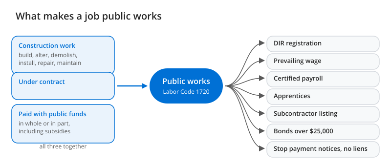

What makes a job public works in California
In one sentence: a job is public works when it is construction, alteration, demolition, installation or repair done under contract and paid for in whole or in part with public money, and that one fact brings a whole set of rules with it.

The definition
California's prevailing wage law starts at Labor Code section 1720. The core test is simple: construction work, under contract, paid in whole or in part out of public funds. "Construction" is read broadly. It includes installation and repair, and it reaches work done before and after the main construction, such as surveying, inspection and hauling of materials to and from the site in many cases. Maintenance work is covered too.
Public funds are also read broadly. A city paying the invoice is the obvious case. But fee waivers, below-market land, low-interest loans and other subsidies to a private developer can make a privately owned project public works as well.
Who the owner is
- State agencies, such as Caltrans, which awards and manages its own highway contracts. See What a Caltrans electrical contractor does.
- Local agencies: cities, counties, school districts, water and transit districts, community colleges.
- Private owners whose project receives public money of the kind described above.
Each owner adds its own front-end documents to the contract, but the state laws below apply to all of them.
What comes with it
| Rule | What it means for you | Read more |
|---|---|---|
| DIR registration | You can't bid or work without a current registration | DIR public works contractor registration |
| Prevailing wage | Workers are paid at least the published rate for their craft and county | Prevailing wage |
| Certified payroll | Weekly payroll records, reported electronically to DIR | Certified payroll |
| Apprentices | Notify apprenticeship programs and employ apprentices in ratio | Apprentices on public works |
| Subcontractor listing | List subs above the threshold in your bid | Listing subcontractors |
| Bonds | Bid security, then payment and performance bonds | Payment and performance bonds |
| No mechanics liens | Unpaid parties use stop payment notices and bond claims instead | Getting paid: preliminary notices, stop payment notices and bond claims |
The thresholds worth remembering
- $25,000 / $15,000: DIR registration and most state enforcement apply to construction projects over $25,000 and maintenance projects over $15,000. Below those amounts you may still owe prevailing wage.
- $1,000: prevailing wage itself applies to public works over $1,000, so small jobs are not exempt from paying the rate.
- $30,000: apprenticeship obligations apply to contracts of $30,000 or more.
- $25,000: a payment bond is required on public works contracts over $25,000.
These numbers come from state law and can change; the bid documents for each job restate the ones that apply.
Federal money
When a job is paid partly with federal transportation funds (a "federal-aid" job), federal rules are added on top: Davis-Bacon wages, the FHWA-1273 required provisions and, at times, DBE requirements. See Federal-aid jobs: Davis-Bacon and FHWA-1273.
Common mistakes / what agencies actually check
- Assuming a privately owned project is private work, when a public subsidy makes it public works.
- Treating a small job as exempt from prevailing wage because it is under the registration threshold.
- Starting work before checking that every sub on the job is DIR-registered.